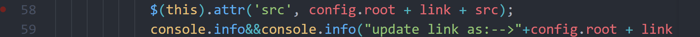
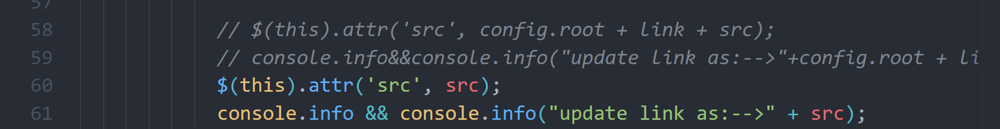

使用hexo+github搭建个人博客
官方网址：Hexo
主题：Butterfly
主题美化：Butterfly主题美化教程
使用hexo+github搭建个人博客
前期准备安装
Nodejs
2024最新版Node.js下载安装及环境配置教程【保姆级】_nodejs下载-CSDN博客
Git
git安装配置教程(小白保姆教程2024最新版)_git安装及配置教程-CSDN博客
git的安装与配置教程-超详细版_git安装及配置教程-CSDN博客
之后
Hexo建站手册（详细教程） - 知乎 (zhihu.com)
使用 Hexo+GitHub 搭建个人免费博客教程（小白向） - 知乎 (zhihu.com)
使用hexo搭建github.io博客(一) - 诗&远方 - 博客园 (cnblogs.com)
HEXO系列教程 | 使用GitHub部署静态博客HEXO | 小白向教程 – 夜梦星尘の折腾日记 (yemengstar.com)
Hexo 博客搭建并部署到 GitHub Pages(2024最新详细版)_github pages上部署hexo-CSDN博客
Hexo+GitHub搭建个人博客教程（2023最新版）_hexo github个人网站教程-CSDN博客
遇到的一些问题
上传报错问题
在git clone 或者hexo d 上传到github的过程中可能出现“fatal: unable to access ‘https://github.com/…/.git’: Recv failure Connection was reset”。这是因为挂梯子使用了代理导致的
一般最常见的解决方法就可以解决问题：通过在终端执行以下命令，可以取消 Git 的代理设置：
1 | git config --global --unset http.proxy |
图片不显示
hexo博客中插入图片失败——解决思路及个人最终解决办法_hexo 文章插入图片失败-CSDN博客
个人经验：
- 最初按上述博客的方法弄半天没有成功，但是复制粘贴图片能够自动新建同名文件夹倒是不错。
- 最好在新建markdown文件时命名为英文，不然在typora里面的图片路径会是乱码。
- 然后就是图片命名最好不要带上日期格式，这样在网页端也可能显示不出来
正确方法（未使用图床）：
转自：HEXO系列教程 | 发布文章 | 解决静态图片路径错误问题 | 小白向教程 – 夜梦星尘の折腾日记 (yemengstar.com)
通过修改配置并安装插件的方法完成图片的插入。你需要修改站点配置
_config.yml，将post_asset_folder设置为true，如下图：然后安装插件：
通过直接查看 HTML 文件（hexo根目录的下的public/日期/文章/index.html），我们可以看到是因为多了 /.com/，所以在加载图片的时候无法获得正确的路径。
具体的修改也很简单，我们只需要到
node_modules中找到hexo-asset-image，并将 58、89 行的
修改为：
2
console.info && console.info("update link as:-->" + src);如下图：

就可以显示正常的图片
PS:如果按正确办法没有显示图片，试试hexo clean先释放缓存，然后再hexo g，hexo s吧。
数学公式
在执行Solitude文档操作时报错类似如下：如何解决npm install 的报错npm ERR! network request to http://registry.cnpmjs.org/vue-cli failed_npm err network-CSDN博客
在尝试该博客Vue3 解决：npm ERR! network request to https://registry.npmmirror.com/node-sass failed 的三种解决方案-CSDN博客操作之后没有解决问题，遂更换了Solitude文档中的代码如下：
1 | npm un hexo-renderer-marked --save |
markdown-it-katex.原文档：@renbaoshuo/markdown-it-katex - npm (npmjs.com)
之后换回了butterfly主题，因为代码块颜色的问题弄半天没解决，数学公式的配置在官方配置里有
Butterfly 安裝文檔(四) 主題配置-2 | Butterfly
hexo中换行公式会遇到无法正常显示的问题：建议把\\换行符号换为四个\，如下所示
\begin{split}\begin{aligned} h' =\begin{cases}0 & \text{ 概率为 } p \\\\ \frac{h}{1-p} & \text{ 其他情况} \end{cases} \end{aligned}\end{split}
代码块
搜索
Hexo博客增加本地搜索的功能（hexo-generator-searchdb） | Cream薄荷糖 (creammint.github.io)